Solution
- The submatrix consisting of rows 1 and 5 and of columns 1 and 5 is
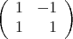 which has determinant 2, so the matrix is not totally unimodular.
- By pivoting and deleting unit rows and columns, we can make the following
reductions:
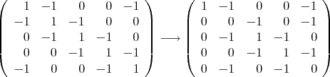 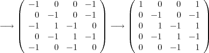 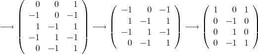 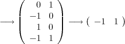 which is totally unimodular, so the original matrix is totally unimodular.
Solution: Each column corresponds to a vertex and each row to a clique. Need to determine whether the corresponding graph is perfect.
- First graph:

An odd hole or odd antihole of cardinality 5 is a chordless cyle. To be chordless, it can contain at most two of vertices 2, 3, and 6. If it includes 3 then it must include both 2 and 6 because these are the only neighbors of vertex 3. Thus, the cycle includes vertices 2 and 6, and excludes vertex 3. Since it has cardinality 5, it must include vertex 5, but then it is not chordless, since vertices 2, 5, and 6 form a clique.
- Second graph:

A graph is perfect if an only if its complement is perfect. Here, the complement is:

This graph contains no cycle of length 5, so certainly no odd hole or antihole on 5 vertices. Vertex 6 is isolated, so it contains no odd hole or antihole on 7 vertices.
where n is an odd integer. We wish to solve this problem using a branch and bound algorithm with linear programming relaxations. Assume we always branch using variable dichotomies (ie, add the constraints xi = 0 or xi = 1 for some i). Show that an exponential number of nodes of the branch and bound tree must be considered to solve the problem.
Solution: The optimal value of the integer program is -1, since xn+1 must equal -1 in any feasible solution, because n is odd.
If no more than ⌊n∕2⌋ variables have been fixed at 0 or 1 then the optimal solution to the LP relaxation is equal to zero. Thus, the only nodes in the tree that can be pruned are those with at least ⌈n∕2⌉ variables fixed. So the tree must contain at least 2n∕2-1 nodes, which is exponential.
branching using variable dichotomies. Give a valid cover inequality violated by your solution to the root node. What do you get if you lift this inequality?
Solution: There are two optimal solutions, namely x = (1, 1, 0, 0, 1) and x = (0, 0, 1, 1, 0), each with value 47. A violated cover inequality is x1 + x2 + x3 ≤ 2, and lifting this gives the same inequality.
- Constraints:
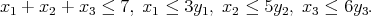 Point:
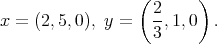 - Constraints:
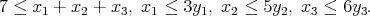 Point:
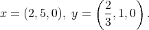
Solution: The general form of the fixed charge inequality is
where C1 is a subset of the variables on the LHS of the original inequality, C2 and L2 are disjoint subsets of the variables on the RHS of the original inequality, b is the constant term on the RHS of the original inequality, aj is the capacity in the xj ≤ ajyj constraints, and λ = ∑ jC1aj -∑ jC2aj - b.
- Let C1 = {1, 2}, C2 = L2 = ∅. We obtain λ = 1 and the valid inequality
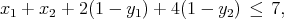 which is violated by the given point.
- Let C1 = ∅, C2 = {2}, L2 = {1}. We obtain λ = 2 and the valid inequality
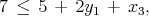 which is violated by the given point.
Alternatively, taking C1 = ∅, C2 = {2}, L2 = {1, 3} gives λ = 2 and another valid inequality violated by the current point:
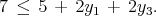